Exercise 1: Setting Up npm
Level 1: Initialize a new Node.js project
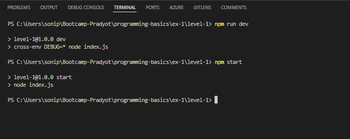
Level 2: Install the chalk package
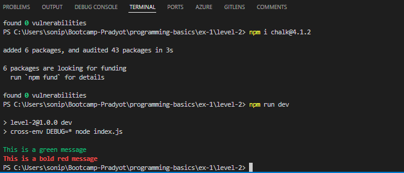
Level 3: Add a prestart script
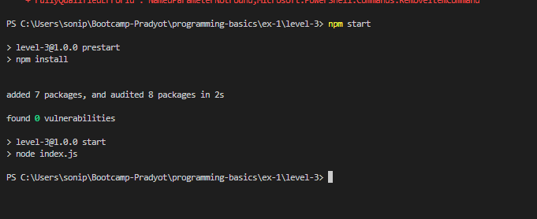
Exercise 2: Command-Line Program
Level 1: script that calculates the sum of numbers
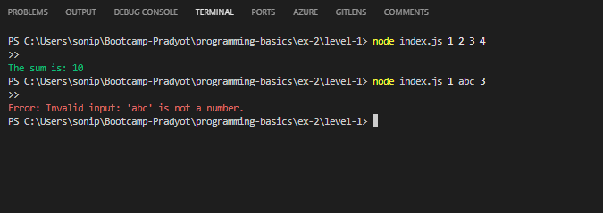
Level 2: Enhance the script to accept a --multiply flag
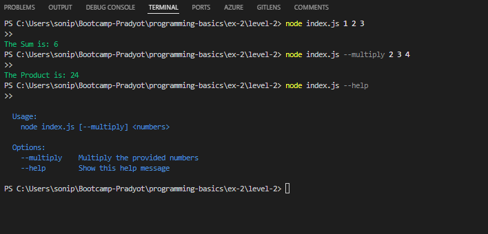
Level 3: Modularize the program by creating a separate file

Exercise 3: Using Logging (Winston)
Level 1: Install winston and create a logger
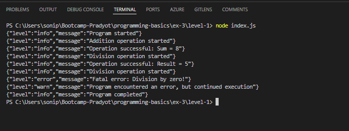
Level 2: Add file transport to log messages to a file.
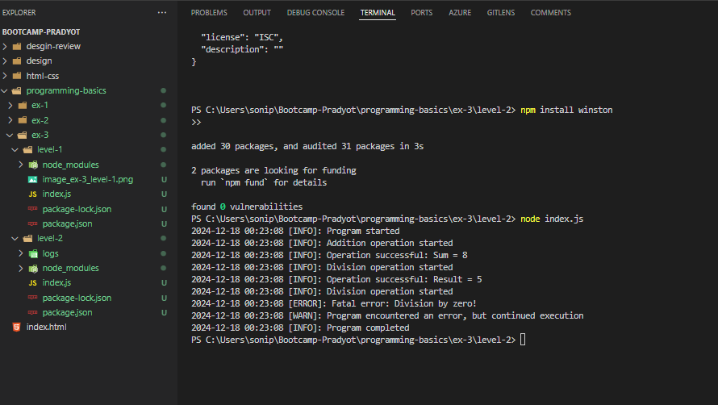
Exercise 4: Debugging (debug)
Level 1: Install debug and set up a namespace
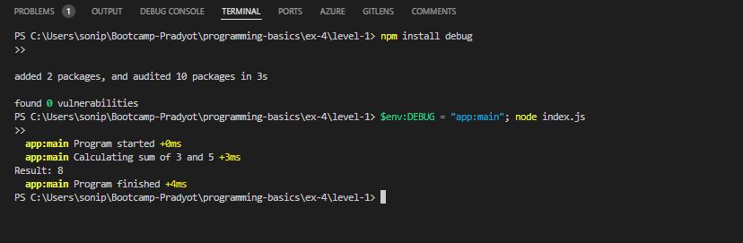
Level 2: Extend the program with multiple modules
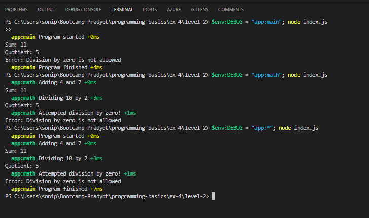
Level 3: Combine debug with winston for structured debugging and logging
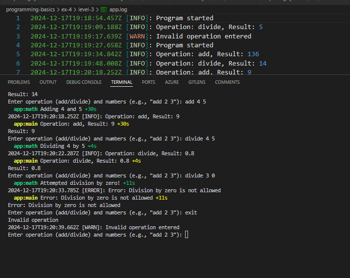
Exercise 5: Managing Environment Variables (dotenv)
Level 1: Install dotenv and create a .env file with configuration variables
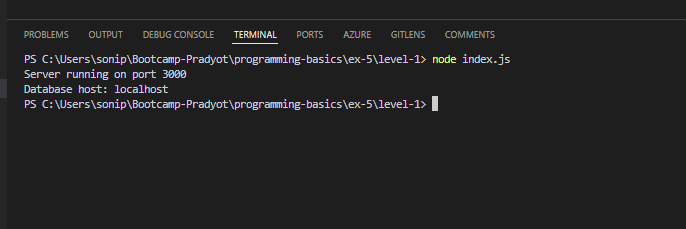
Level 2: Add fallback values for missing environment variables.
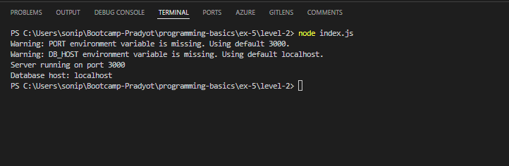
Level 3: Use environment variables to configure a database connection
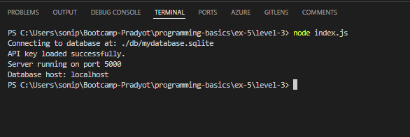
Exercise 6: YAML Configuration (config)
Level 1: Install config and create a default.yaml configuration file
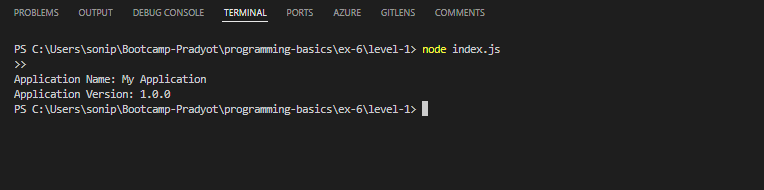
Level 2: Add multiple environments
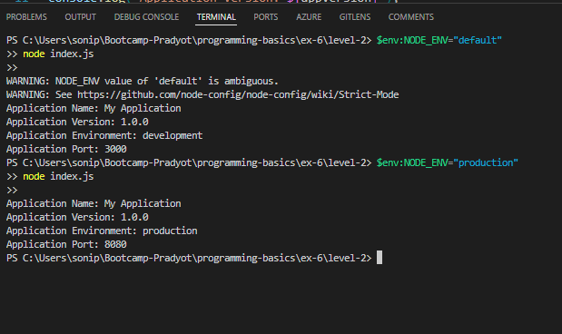
Level 3: Use the configuration to dynamically adjust program behavior
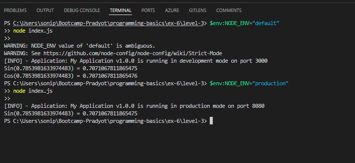